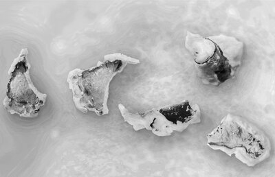

Branding Islands Making Nations was an exhibition and public program developed in collaboration with the Vertical Geopolitics Lab for the 2016 Venice Architecture Biennale. The project examined the relationship between physical land creation and the representational language deployed to legitimize it, exposing how branding, marketing, and visual communication extend the reach and power of nation-states through constructed territory.
The contribution included a film exploring how the production of new land intersects with the production of meaning. Where the geomorphology table research investigated the material dynamics of sediment deposition and land-building, this project interrogated the parallel process by which territorial claims are constructed through representation. The large-format prints documented case studies of how branding and marketing operate as instruments of geopolitical power, transforming artificial landmasses into naturalized extensions of sovereign territory.
The conceptual framework positioned representation as constitutive rather than solely descriptive and that the politics of representation determine the success of interventions in the built environment. Land that appears on maps, that receives names and flags, that circulates through media imagery, acquires a political reality that may precede or even substitute for material presence. The project asked how spatial practitioners (landscape architects, architects, designers, consultants) participate in this representational economy, whether consciously or not.
Competition Format: The public program took the form of a satirical case study competition, inviting marketing experts, communication designers, and advertising professionals to speculate on the role of branding in place-making. Departing from ethical critique to satire, the competition employed a format foreign to academic architectural discourse, the sales pitch. Entrants were tasked with developing branding packages for artificial landmasses instrumental in legitimizing territorial claims, specifically within the contested geography of the South China Sea.
The competition framework deliberately suspended moral evaluation, analyzing entries instead for their “rich interrogation of the role representation plays in its ability to distort, mislead, disguise, or reverse meaning.” By creating incongruity between reality and what is represented, successful entrants demonstrated how the negative might appear positive in legitimizing territorial claims. The goal was not to endorse such practices but to expose them, making visible the mechanisms by which representation manufactures political reality.
Critical Intent: The project operated through strategic exposure rather than direct opposition. As the exhibition statement noted: “it is based on the firm belief in the necessity to expose the glitches, loopholes, and gray areas in systems as first step toward conflict resolution.” By staging the representational strategies of geopolitical land-making as design problems, the exhibition created discourse on the status spatial practitioners hold within societal decision-making structures that are caught between accountability and profitability, between ethical responsibility and technical capability.
Branding Islands Making Nations extended the land-making research into explicitly political territory, revealing that the choreography of sediment is inseparable from the choreography of meaning. Several key insights emerged:
Representation as Territory: The project demonstrated that constructed land acquires political existence through representational practices as much as through material deposition. An artificial island becomes sovereign territory not merely when sand is dredged and piled but when it appears on official maps, when it receives a name, when satellite imagery circulates through news media, when it is branded with national identity. This insight complicated the technical optimism of the geomorphology research, suggesting that land-building is always already a political act embedded in systems of representation and power.
The Designer’s Complicity: By inviting spatial practitioners to occupy the position of nation-state consultants, developing branding packages for contested territorial claims, the project forced confrontation with the political economy of design expertise. Landscape architects, architects, and planners possess technical knowledge that can serve multiple masters; the capacity to choreograph land-making processes is also the capacity to enable territorial expansion, displacement, and conflict. The exhibition asked not whether designers should engage with such commissions but how they might do so with awareness of their position within larger power structures.
Satire as Method: The competition format employed satire as a critical methodology. By treating geopolitical branding as a legitimate design problem that were complete with briefs, juries, and evaluation criteria, the project defamiliarized practices that typically operate invisibly. The absurdity of awarding prizes for territorial propaganda exposed the absurdity already present in the actual practices of nation-state image-making. Satire enabled critique without moralizing, creating space for analysis of how representation functions rather than simply condemning its misuse.
From Material to Meaning: The project marked an important expansion in the research trajectory. Earlier work with the Sedimachine and with the geomorphology table focused on the material dynamics of land formation and how water, sediment, and intervention interact to produce terrain. Branding Islands Making Nations asked what happens after (or alongside) material production and how newly made land is inscribed with meaning, claimed by sovereigns, contested by rivals, and circulated through global media.
